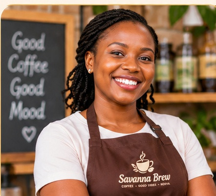

Our Story
Savanna Brew Café opened in 2019 with one small espresso machine and a big dream: to celebrate Kenyan coffee. Founder Amina Otieno grew up on her grandparents' coffee farm in Nyeri and wanted to bring that flavour to the city. Today the café supports local farmers, uses eco-friendly packaging and hosts community events every month.
"Every bean we roast carries the hard work of Kenyan farmers. When you sit down at Savanna Brew, you are sharing in that heritage." — Mrs. Amina Otieno, Founder
Our Values
- Quality: only freshly roasted, single-origin Kenyan beans.
- Community: fair prices for farmers and a welcoming space for all.
- Sustainability: compostable cups and zero-waste pastries.